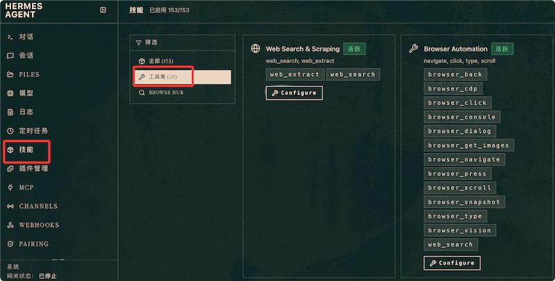

Hermes Agent 工具集
工具是 Hermes Agent 与外部世界交互的唯一通道——读写文件、执行命令、搜索网页、生成图片，所有能力都通过工具暴露。
Hermes 内置 70+ 工具，分为 28 个工具集。本章将逐一解析每个工具集的核心工具、参数和最佳实践。
工具系统架构
在深入具体工具之前，先理解工具的组织方式。
Hermes 采用三层结构管理工具：
工具（Tool） ← 单个可调用函数，如 read_file、web_search
└── 工具集（Toolset） ← 相关工具的逻辑分组，如 file、web
└── 平台配置 ← 哪个平台加载哪些工具集
关键设计：禁用一个工具集，其中的工具从系统提示词中完全消失——不只是不可调用，而是 Agent 根本不知道它们的存在。这既节省 Token，也防止 Agent 误用不该用的工具。
管理工具集的方式：
# TUI 交互式管理（推荐） hermes tools # 命令行管理 hermes tools list # 列出所有工具及启用状态 hermes tools enable browser # 启用指定工具集 hermes tools disable audio # 禁用指定工具集
在 config.yaml 中配置：
# 文件路径：~/.hermes/config.yaml
# 按平台指定启用的工具集
platform_toolsets:
cli:
- hermes-cli # CLI 核心工具集
- file
- terminal
- web
- memory
- skills
桌面版，在左侧的技能与工具菜单：

仪表盘上也可以管理工具，在左侧技能菜单里：

文件与系统工具集
这类工具集让 Agent 能够操作本地文件系统、执行命令和管理进程。
file — 文件操作
最基础的工具集，Agent 几乎所有任务都依赖它来读写文件。
| 工具 | 功能 | 关键参数 |
|---|---|---|
| read_file | 读取文件内容 | file_path（必填）、offset（起始行）、limit（行数上限） |
| write_file | 创建或覆盖文件 | file_path（必填）、content（必填） |
| edit_file | 精确替换文件中的文本 | file_path、old_string、new_string、replace_all |
| list_dir | 列出目录内容 | path（必填）、recursive（是否递归） |
| search_files | 按文件名模式搜索 | pattern（必填，支持 glob）、path（搜索根目录） |
| search_content | 在文件内容中搜索文本 | pattern（必填，支持正则）、path、file_types |
edit_file 的工作原理：它使用精确子串匹配定位修改位置。Agent 提供 old_string（文件中实际存在的文本），工具找到它并替换为 new_string。如果 old_string 匹配到多处，设置 replace_all: true 替换所有出现。
edit_file 是 Agent 最常用的文件修改方式——它比 write_file 更安全，因为如果 old_string 找不到，操作会失败报错，不会意外覆盖文件。
terminal — Shell 命令执行
让 Agent 在指定的后端环境中执行 Shell 命令。
| 工具 | 功能 | 关键参数 |
|---|---|---|
| run_command | 执行单条 Shell 命令 | command（必填）、workdir（工作目录）、timeout（超时毫秒） |
| run_script | 执行多行 Shell 脚本 | script（必填，多行脚本内容）、workdir、timeout |
命令在配置的终端后端中执行——local（本机）、docker（容器）、ssh（远程）等。
执行结果包含 stdout、stderr 和退出码，Agent 可以根据这些信息判断命令是否成功。
code — 沙箱代码执行
在隔离沙箱中执行代码片段，支持 Python、JavaScript 和 Bash。
| 工具 | 功能 | 关键参数 |
|---|---|---|
| execute_code | 在沙箱中运行代码 | language（python/js/bash）、code（必填）、timeout |
与 terminal 的区别：code 工具在独立沙箱中运行，不能访问文件系统（除非显式挂载），适合运行算法验证、数据处理等不需要文件交互的代码。
computer — 桌面 GUI 自动化
控制桌面环境的鼠标、键盘和截图。
| 工具 | 功能 |
|---|---|
| screenshot | 截取屏幕或指定区域 |
| click | 在指定坐标点击鼠标 |
| type | 模拟键盘输入文本 |
| scroll | 滚动鼠标滚轮 |
| move | 移动鼠标到指定坐标 |
computer 工具集主要用于 GUI 应用测试和自动化操作。如果你的使用场景不涉及桌面应用，可以禁用以节省 Token。
网络与内容工具集
这类工具集让 Agent 能够搜索互联网、提取网页内容和自动化浏览器操作。
web — 网页搜索与内容提取
Agent 获取外部信息的主要渠道。
| 工具 | 功能 | 关键参数 |
|---|---|---|
| web_search | 搜索互联网内容 | query（必填）、num_results（结果数量） |
| web_extract | 提取指定 URL 的正文内容 | url（必填）、extract_mode（auto/text/markdown） |
web_search 返回搜索结果列表（标题 + URL + 摘要），Agent 通常先搜索，再对感兴趣的页面调用 web_extract 获取详细内容。
需要配置搜索 API 才能使用。支持多种提供商：
实例
# 配置网页搜索后端
web:
search_provider: firecrawl # 或 brave、serpapi、tavily
# 在 .env 中设置对应的 API Key
# FIRECRAWL_API_KEY=fc-...
# 或 BRAVE_API_KEY=BS...
browser — 浏览器自动化
完整的浏览器控制能力——导航、点击、填表、截图，像人一样操作网页。
| 工具 | 功能 | 关键参数 |
|---|---|---|
| navigate | 导航到指定 URL | url（必填） |
| click | 点击页面元素 | selector（CSS 选择器或文本描述） |
| fill_form | 填写表单字段 | fields（字段名到值的映射） |
| screenshot | 截取当前页面 | full_page（是否全页截图） |
| extract | 提取页面结构化数据 | selector、format（json/text） |
| execute_js | 在页面中执行 JavaScript | code（必填） |
browser 工具集需要 Playwright 或云端浏览器后端支持。
browser 工具集启动浏览器实例会消耗额外资源。如果只需要提取网页文本内容，优先使用 web_extract 而非 browser extract——前者是轻量 HTTP 请求，后者需要启动完整浏览器。
vision — 图片分析
让 Agent 「看懂」图片内容。
| 工具 | 功能 | 关键参数 |
|---|---|---|
| analyze_image | 分析图片内容并生成描述 | image_path 或 image_url（必填）、question（可选，针对图片的特定问题） |
| describe_image | 生成图片的详细文字描述 | image_path 或 image_url（必填） |
vision 工具将图片发送给支持视觉的 LLM（如 claude-sonnet-4-6、gpt-4o），由模型识别和描述图片内容。
audio — 音频处理
语音转文字和文字转语音。
| 工具 | 功能 | 关键参数 |
|---|---|---|
| transcribe | 将音频文件转为文字 | audio_path（必填）、language（可选） |
| tts | 将文字转为语音文件 | text（必填）、voice（音色选择）、provider |
Agent 能力工具集
这类工具集管理 Agent 自身的状态——记忆、技能、子 Agent 协作。
memory — 记忆管理
读写持久记忆和搜索跨会话历史。
| 工具 | 功能 | 关键参数 |
|---|---|---|
| memory | 管理持久记忆（增删改） | action（add/replace/remove）、target（memory/user）、content |
| session_search | 全文搜索历史会话 | query（必填，支持 FTS5 语法） |
memory 工具没有 read 操作——持久记忆在会话启动时已注入系统提示词，Agent 无需额外读取。
skills — 技能管理
加载和管理可复用的工作流技能。
| 工具 | 功能 | 关键参数 |
|---|---|---|
| skills_list | 列出所有已安装技能及其描述 | 无（会话启动时自动调用） |
| skill_view | 加载技能的完整内容 | name（必填）、path（可选，加载 references 子文件） |
| skill_manage | 创建、修改或删除技能文件 | action、name、content |
delegation — 子 Agent 委托
派生子 Agent 并行执行任务。
| 工具 | 功能 | 关键参数 |
|---|---|---|
| spawn_agent | 创建单个子 Agent 执行任务 | prompt（必填）、model（可选） |
| spawn_parallel | 并行创建多个子 Agent | tasks（必填，任务列表） |
子 Agent 拥有独立的上下文窗口，不会污染主 Agent 的对话历史。执行完毕后返回结果摘要。
kanban — 多 Agent 看板
结构化的多 Agent 协作系统，需显式启用（all/* 也不自动开启）。
| 工具 | 功能 |
|---|---|
| task_create | 在看板中创建新任务 |
| task_update | 更新任务状态（todo/in_progress/done） |
| task_list | 列出租户的所有任务 |
| task_assign | 将任务分配给指定的工作者 Agent |
Kanban 是多 Profile 协作的核心机制——一个编排者 Profile 创建任务，多个工作者 Profile 认领执行。这需要多个 Profile 的网关同时运行。
媒体创作工具集
这类工具集通常需要 Nous Portal 订阅或对应的第三方 API Key。
image_gen — AI 图片生成
根据文字描述生成图片，支持 9 种模型。
| 工具 | 功能 | 关键参数 |
|---|---|---|
| generate_image | 根据 Prompt 生成图片 | prompt（必填）、model（flux/gpt-image/ideogram 等）、size、style |
tts — 文字转语音
独立于 audio 工具集的 TTS 功能，提供更丰富的提供商选择。
| 工具 | 功能 |
|---|---|
| text_to_speech | 将文字转换为语音文件 |
| list_voices | 列出可用的语音音色 |
自定义工具集
你可以将现有工具集组合为项目专属的自定义工具集：
实例
# 定义项目专属工具集组合
custom_toolsets:
# 数据科学项目需要的工具
data-science:
- file
- terminal
- code
- web
# 纯写作项目只需文件操作
writing:
- file
- web
- memory
# 运维项目需要终端 + 文件，不需要浏览器
devops:
- file
- terminal
- memory
使用时通过--toolsets参数指定：
实例
hermes --toolsets data-science chat
# 或在 Profile 配置中设为默认
coder config set toolsets data-science
工具调用流程
了解一次工具调用的完整流程有助于理解 Agent 的行为和排查问题。
一次完整的工具调用经过以下步骤：
- LLM 在生成回复时决定调用某个工具，输出工具名和参数
- tool_request Middleware 执行（可以修改参数）
- 审批检查——如果工具是危险操作，根据 approvals.mode 决定是否弹出确认
- 工具实际执行
- tool_execution Middleware 执行（可以修改结果）
- post_tool_call Hook 记录遥测数据
- 执行结果返回给 LLM，LLM 继续生成回复
如果你的 Middleware 修改了工具参数，修改后的参数是审批和实际执行的输入。如果你在 Middleware 中短路了执行（返回自定义结果），实际工具不会运行。
工具使用统计
了解哪些工具被频繁使用，有助于优化工具集配置和 Token 消耗。
在会话中查看本次会话的工具调用统计：
实例
/usage
# 输出示例：
# Token 用量: 输入 12,340 | 输出 5,678 | 总计 18,018
# 工具调用: read_file (15次) | edit_file (8次) |
# terminal (3次) | web_search (2次)
批量处理场景中，statistics.json 文件记录了更详细的统计：
实例
{
"total_tool_calls": 1523,
"tools": {
"read_file": {"count": 520, "success": 510, "failure": 10},
"edit_file": {"count": 380, "success": 375, "failure": 5},
"terminal": {"count": 290, "success": 270, "failure": 20},
"web_search": {"count": 180, "success": 178, "failure": 2}
},
"avg_tool_calls_per_turn": 2.4,
"most_common_tool_sequence": [
"read_file", "edit_file", "terminal"
]
}
点我分享笔记
<p style="font-size:14px;">笔记需要是本篇文章的内容扩展！</p><br> <p style="font-size:12px;"><a href="../tougao.html" target="_blank">文章投稿，可点击这里</a></p> <p style="font-size:14px;"><a href="../w3cnote/runoob-user-test-intro.html" target="_blank">注册邀请码获取方式</a></p> <h3 class="text-muted"><i class="fa fa-info-circle" aria-hidden="true"></i> 分享笔记前必须<a href=";.html" class="runoob-pop">登录</a>！</h3> <p><a href="../w3cnote/runoob-user-test-intro.html" target="_blank">注册邀请码获取方式</a></p>